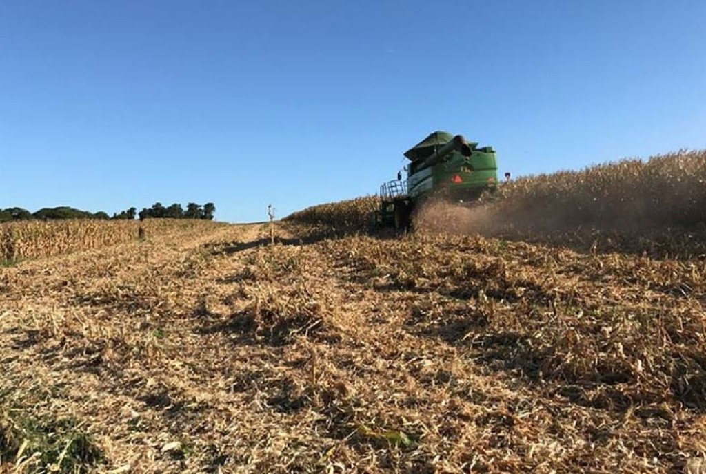
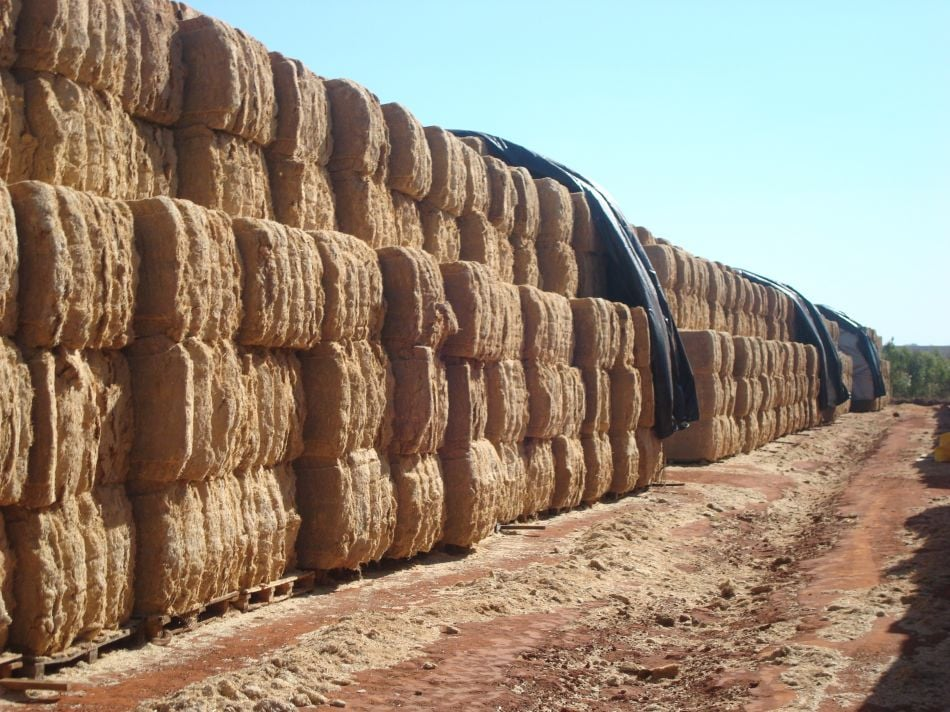
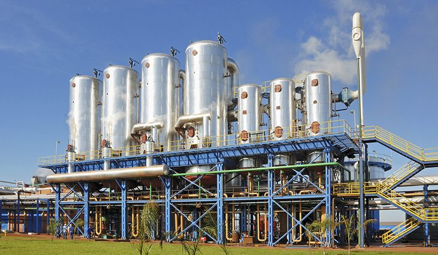
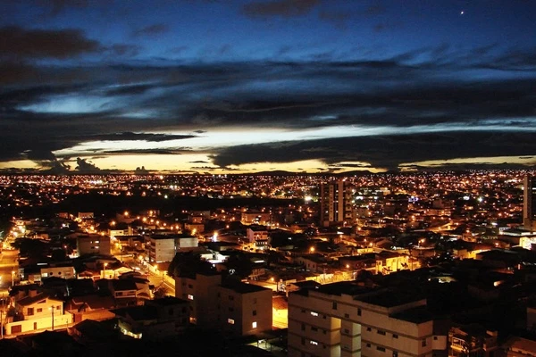
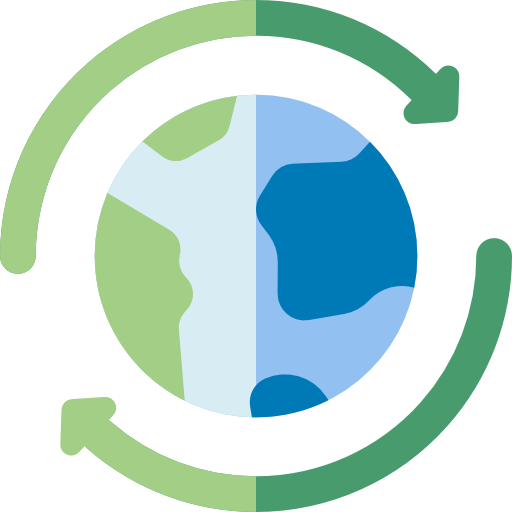

O processo que transforma resíduos agrícolas em energia limpa
Veja como os resíduos da agricultura se tornam energia renovável para abastecer casas e indústrias de forma sustentável.

Cultivo
As plantações crescem fortes e saudáveis, gerando alimentos e biomassa.

Resíduos
Após a colheita, os resíduos como palha, bagaço e cascas são coletados.

Biomassa
Os resíduos são processados e transformados em biomassa.

Energia
A biomassa é convertida em energia renovável por meio de processos específicos.

Casas e Indústrias
A energia gerada é distribuída para casas, comércios e indústrias.

Um ciclo sustentávelAproveitamos o que seria desperdiçado e transformamos em energia limpa, reduzindo impactos e construindo um futuro melhor.
Aproveitamento total
Nada se perde, tudo se transforma em valor e energia.
Menos poluição
Reduzimos emissões de CO₂ e contribuímos com o planeta.
Sustentabilidade
Um processo que gera energia hoje sem comprometer o amanhã.
Desenvolvimento
Energia limpa que impulsiona a economia e melhora a qualidade de vida.